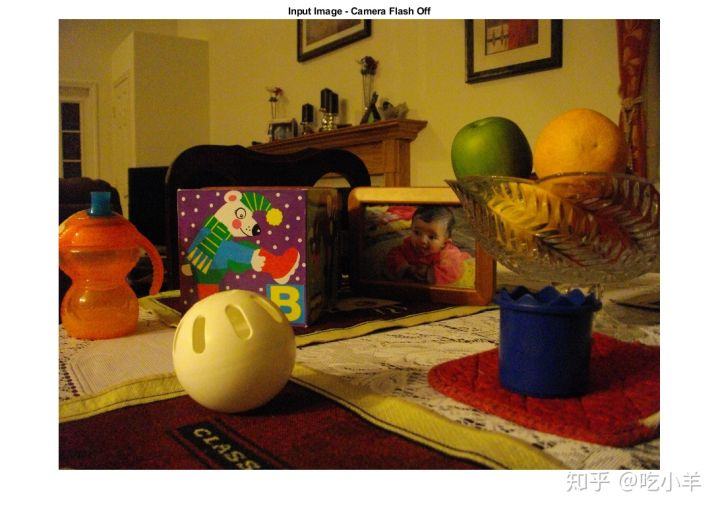
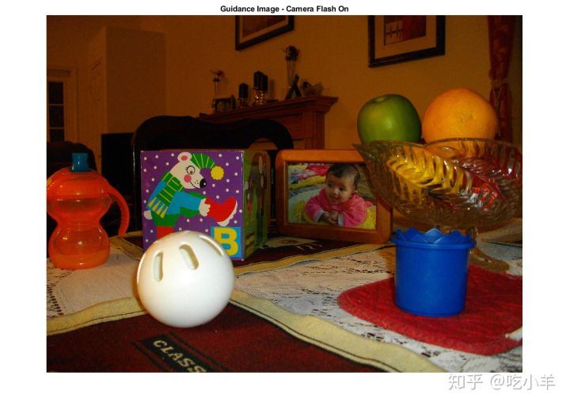
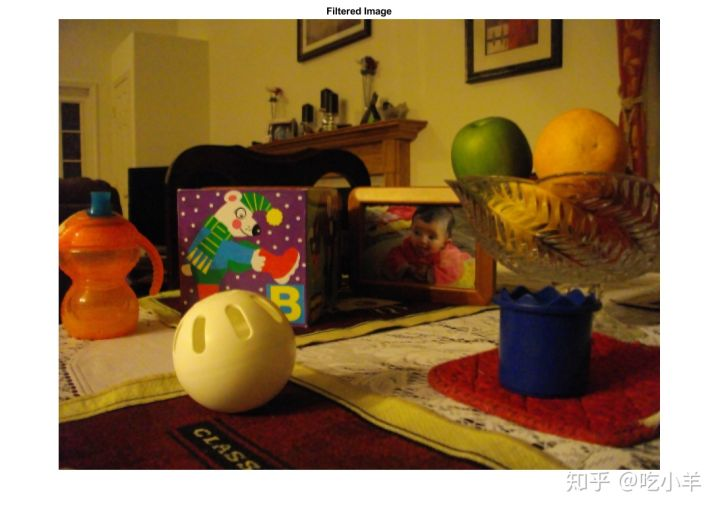
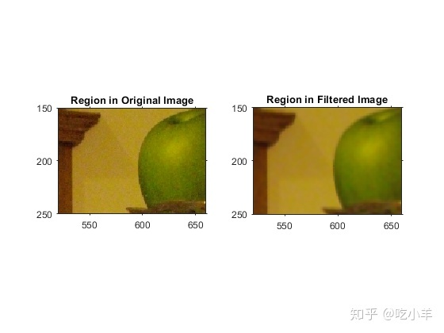

Home
本示例说明如何使用引导滤波器使图像平滑，减少噪声并保留边缘。该示例使用同一场景的两张图片，一张使用闪光灯，另一张不使用闪光灯。没有闪光灯的版本可以保留色彩，但由于光线不足，因此会产生噪音。本示例使用使用闪光灯的版本作为引导图像。
将要滤波的图像读取到工作区中。本示例使用不带闪光灯拍摄的一些玩具的图像。由于光线不足，图像中包含很多噪点。
A = imread('toysnoflash.png');
figure;
imshow(A);
title('Input Image - Camera Flash Off')

将要用作引导图像的图像读入工作区。在此示例中，引导图像是使用闪光灯拍摄的同一场景的图片。
G = imread('toysflash.png');
figure;
imshow(G);
title('Guidance Image - Camera Flash On')

执行引导式滤波操作。使用imguidedfilter函数，您可以指定用于滤波的邻域的大小。默认值为5 x 5正方形。本示例使用3 x 3邻域。您还可以指定滤波器执行的平滑量。该值可以是任何正数。解决此问题的一种方法是先使用默认值并查看结果。如果要减少平滑度和保留更多边缘，请对该参数使用较低的值。为了更平滑，请使用更高的值。本示例设置平滑参数的值。
nhoodSize = 3;
smoothValue = 0.001*diff(getrangefromclass(G)).^2;
B = imguidedfilter(A, G, 'NeighborhoodSize',nhoodSize, 'DegreeOfSmoothing',smoothValue);
figure, imshow(B), title('Filtered Image')

检查原始图像区域的特写，并将其与滤波后的图像进行比较，以查看此保留边缘的平滑滤镜的效果。
figure;
h1 = subplot(1,2,1);
imshow(A), title('Region in Original Image'), axis on
h2 = subplot(1,2,2);
imshow(B), title('Region in Filtered Image'), axis on
linkaxes([h1 h2])
xlim([520 660])
ylim([150 250])

======================================================================
我的测试结果及程序
下面是我测试的代码：

注：本文根据MATLAB官网内容修改而成。